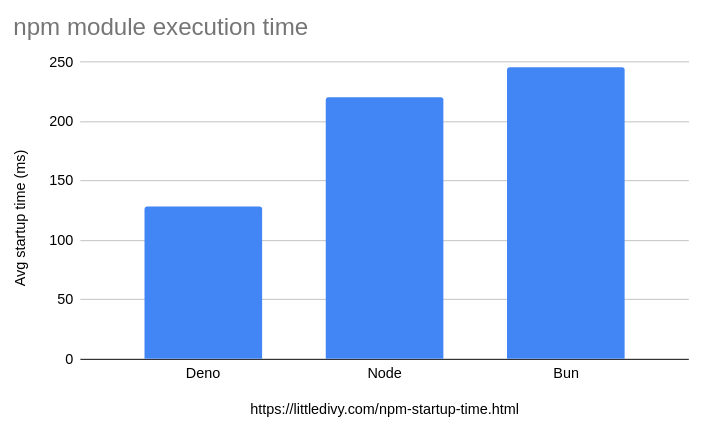

18 September 2024
$ uname -a
Linux divy 6.10.6-arch1-1 #1 SMP PREEMPT_DYNAMIC Mon, 19 Aug 2024 17:02:39 +0000 x86_64 GNU/Linux| Runtime | Version |
|---|---|
| Node.js | 22.8.0 |
| Deno | 2.0.0 |
| Bun | 1.1.27 |
We will be using tsmorph module for this benchmark.
Create a package.json file with the following
content:
// package.json
{
"name": "startup_npm",
"version": "1.0.0",
"dependencies": {
"ts-morph": "^22.0.0"
}
}// bench-startup.mjs
import { Project } from "ts-morph";
console.log(new Project().toString());Use poop
/ hyperfine
to measure execution time of the script.

| Runtime | Avg exec time |
|---|---|
| Deno | 129ms |
| Node.js | 221ms |
| Bun | 246ms |